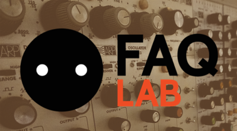
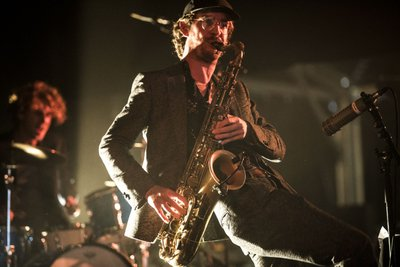
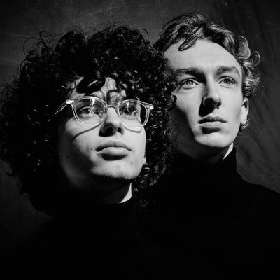

vrijdag
14:00-17:00
Faqlab
Neem een kijkje in het speelse lab van Faq Festival. Het Koudijs Lokaal is omgetoverd tot een waar laboratorium vol installaties, joysticks, modulaire synthesizers, soldeerbouten en loopstations. In verschillende workshops en demonstraties leer je meer over deze instrumenten en kun je zelf aan de slag met het in elkaar solderen van je eigen elektro-kit!
vrijdag
15:30-16:30
Afrikaanse djembé
Ritme in je lijf, altijd ergens op aan het tikken en trommelen; herken je dat? Doe dan mee aan een Djembé-workshop van Martin Gort bij de Jazzwerkplaats en pik nog wat nieuws op! Martin Gort behoort tot de top van de Nederlandse percussiewereld. Hij leert je ritmes uit West Afrika, uit Cuba, weet alles van straatpercussie en haalt het beste uit jouw eigen gevoel voor cadans en dat van de groep.
vrijdag
16:15-16:45
Arvid en Marie
Afgezien van ander onderzoek zijn de geluidsvoorstellingen van Arvid & Marie de meest ontketende van hun creatieve werk. Het barmy-duo houdt ervan om zeer serieuze thema's op nogal absurde manieren te verkennen. Door middel van muziek en gesproken woord wordt geluid een materiaal voor surrealistische sferen. Niets is ooit verzekerd in hun universum van improvisatie, gevonden objecten en zelfgemaakte instrumenten.


vrijdag
18:00-19:00
Nordmann
Nordmann toont de elektrische live intensiteit en het explosieve potentieel van een furieuze rock and rollband, en houdt ondertussen ook de bedachtzame en evoluerende kwaliteiten van de beste improviserende acts vast. De band uit Gent heeft net The Boiling Ground afgeleverd, een album dat leest als free jazz, Kraut, experimenteel, avant-garde en psychrock. Het is een geluid dat tot de verbeelding spreekt en suggestief is, zowel zinderend als bevredigend. Het is de zalvende drug en onmiddellijke kick voor mensen die snakken naar avontuur.

vrijdag
20:00-21:00
KAUW
Deze boys uit Amsterdam maken stampende 'life music house': stampende dance muziek op analoge instrumenten! Met invloeden van het gehele muzikale spectrum en eeuwig groovende beats, is Kauw klaar voor het nachtleven. Met toetsen, bas en drums verbinden deze drie muzikanten sterke harmonieën met spacende melodieën. Juist nu de dansvloer gedomineerd wordt door DJ's zoekt Kauw naar nieuwe sounds en manieren om de analoge elektronische muziek in de clubs te krijgen! Daar werken wij natuurlijk graag aan mee :-)
vrijdag
21:00-22:00
TokTek
TokTek maakt ter plekke rauwe composities van loops uit andere concerten, geluiden van speelgoed, zelfgebouwde synthesizers en joysticks! Alles wordt door hem live gesampeld, verdraaid en weer terug gesmeten om zo een structuur te creëren waarin het verwachtingspatroon geen kans krijgt. Hij geeft zijn publiek telkens opnieuw het 'you ain't seen nothing yet' gevoel.
vrijdag
22:00-23:00
Slumberland
Het project Slumberland van muzikant en filmmaker Jochem Baelus laat zien dat muziek ook op een andere manier gemaakt kan worden. Hij bouwde hiervoor zijn eigen instrument: een gigantisch apparaat dat hij live bedient, gemaakt van haardrogers, vervormde breinaalden, blaasbalgen, potten en pannen, oude super 8 projectoren en naaimachines. Dat alles bespeelt hij in combinatie met zijn eigen zang en rauwe gitaarspel, in combinatie met elektronica en twee live drummers! Als dat geen rauwe kost is...

vrijdag
00:00-04:00